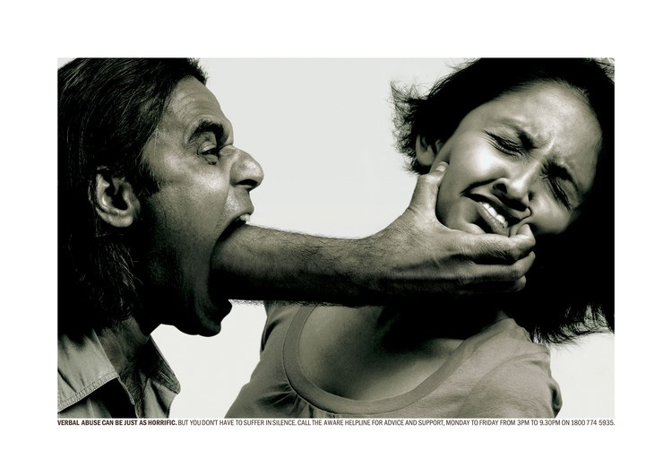

If you're in an abusive situation or you know a woman who is being abused, the first step to getting out,
is getting help
Putting an end to women abuse starts with addressing its causes.
Look over the following questions and signs of domestic abuse.
Think about how you are being treated and how you treat your partner.
Remember when one person scares, hurts or continually puts down the other person that's abuse